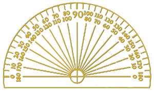

<div class="spacer-div"></div>
<div class="sidebar-spacer-img-div"></div>
<div class="sidebar-box"><h3>Essays about <em>math as a journey:</em></h3>
  <ul>
    <li><a href="finding.html">It's like finding your way home.</a></li>
    <li><a href="confusion.html">Coping with confusion.</a></li>
    <li><a href="mistakes.html">Mistakes are okay.</a></li>
    <li><a href="fiddling.html">Fiddling is fine.</a></li>
    <li><a href="navigator.html">Become a navigator.</a></li>
  </ul>
</div>
<hr>
<!-- img src="img/pencil-03.png" class="pencil-hr" -->
<div class="sidebar-box">
  <p><span class="lead-in">Some other resources</span> of interest to math students:
    <ul>
      <li> Math problem solving is a kind of creativity. <a href="http://theunexpectedpearl.com">The Unexpected Pearl</a> is my website about creative strategies for life in general. </li>
    </ul>
  </p>
</div>
  
